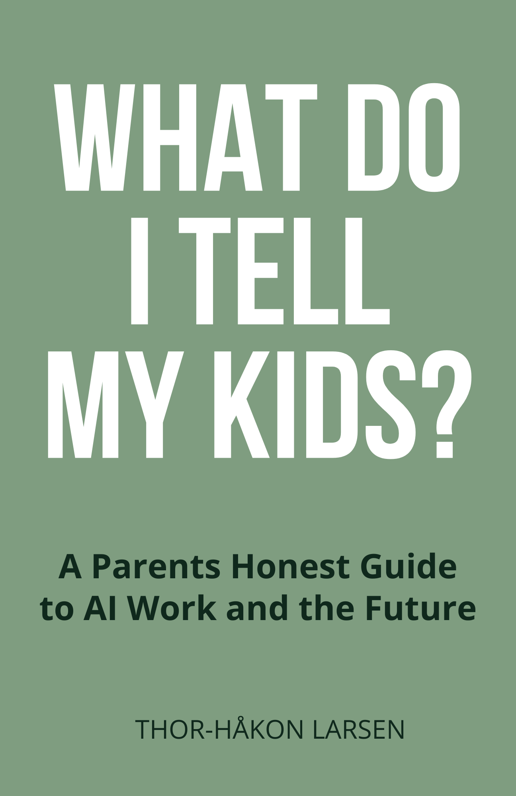

What Do I Tell My Kids?
A Parent’s Honest Guide to AI, Work, and the FutureA Parent’s Honest Guide to AI, Work, and the Future
Everything you were taught about success — study hard, get a degree, find a good job — worked for your parents. It will not work for your children.Alt du lærte om suksess — studer hardt, ta en grad, finn en god jobb — fungerte for foreldrene dine. Det vil ikke fungere for barna dine.
About the BookOm boken
US productivity has surged 60% while wages have barely moved 16%. AGI may arrive as early as 2027. The career advice you inherited is expiring. What Do I Tell My Kids? is a three-part guide for parents navigating the most important conversation of the decade. Part I — The Shift: understand what’s actually happening to work, education, and the economy. Part II — Your Move: adapt yourself with a Future-Proof Skill Stack and Sovereignty Score. Part III — The Next Generation: prepare your children with age-specific conversation guides (ages 5, 10, 15), a Family Future Audit, and a Dinner-Table Curriculum. Includes a 12-month Transition Playbook with concrete actions.
Produktiviteten i USA har steget 60% mens lønningene knapt har beveget seg 16%. AGI kan komme allerede i 2027. Karriererådene du arvet holder på å gå ut på dato. What Do I Tell My Kids? er en tredelt guide for foreldre som navigerer tiårets viktigste samtale. Del I — Skiftet: forstå hva som faktisk skjer med arbeid, utdanning og økonomi. Del II — Ditt trekk: tilpass deg selv med en fremtidssikker ferdighetsstakk og Suverenitetsscore. Del III — Neste generasjon: forbered barna dine med aldersspesifikke samtaleguider (5, 10, 15 år), en Familiens Fremtidsrevisjon og et Middagsbordspensum. Inkluderer en 12-måneders overgangsplan med konkrete handlinger.
What You’ll LearnHva du vil lære
- The Great Decoupling: why productivity and wages have permanently divergedDen store frakoblingen: hvorfor produktivitet og lønn har divergert permanent
- What AGI timelines mean for your children’s career prospectsHva AGI-tidslinjene betyr for barnas karrieremuligheter
- The Future-Proof Skill Stack: which capabilities will matter when AI can do the restDen fremtidssikre ferdighetsstakken: hvilke evner som betyr noe når AI kan gjøre resten
- The Sovereignty Score: a framework for economic independence in a post-labor worldSuverenitetsscore: et rammeverk for økonomisk uavhengighet i en post-arbeids-verden
- Age-specific conversation guides for talking to children at 5, 10, and 15Aldersspesifikke samtaleguider for barn på 5, 10 og 15 år
- A 12-month Family Transition Playbook with concrete weekly actionsEn 12-måneders familieovergangsplan med konkrete ukentlige handlinger
Who This Book Is ForHvem boken er for
For forward-thinking parents aged 30–45 with young children, mid-career professionals aged 35–50 rethinking their own trajectory, and educators looking for frameworks beyond the traditional model.
For fremtidsrettede foreldre mellom 30 og 45 med små barn, fagpersoner midt i karrieren mellom 35 og 50 som revurderer sin egen bane, og pedagoger som ser etter rammeverk utover den tradisjonelle modellen.
DetailsDetaljer
LanguageSpråk
English
GenreSjanger
Parenting & AIForeldreskap & AI
ComparableSammenlignbare
The Anxious Generation (Haidt), 21 Lessons for the 21st Century (Harari), Deep Work (Newport), Range (Epstein)
Stay in the LoopHold deg oppdatert
Get notified when this title is available.Få beskjed når denne tittelen er tilgjengelig.
SubscribeAbonner